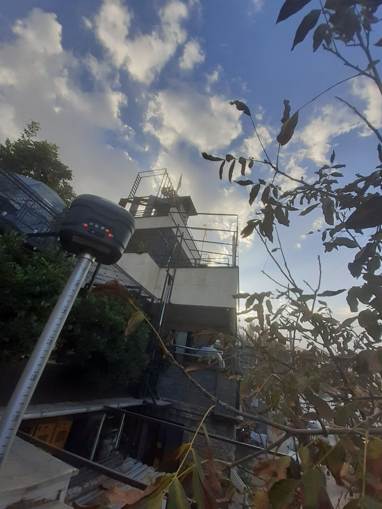
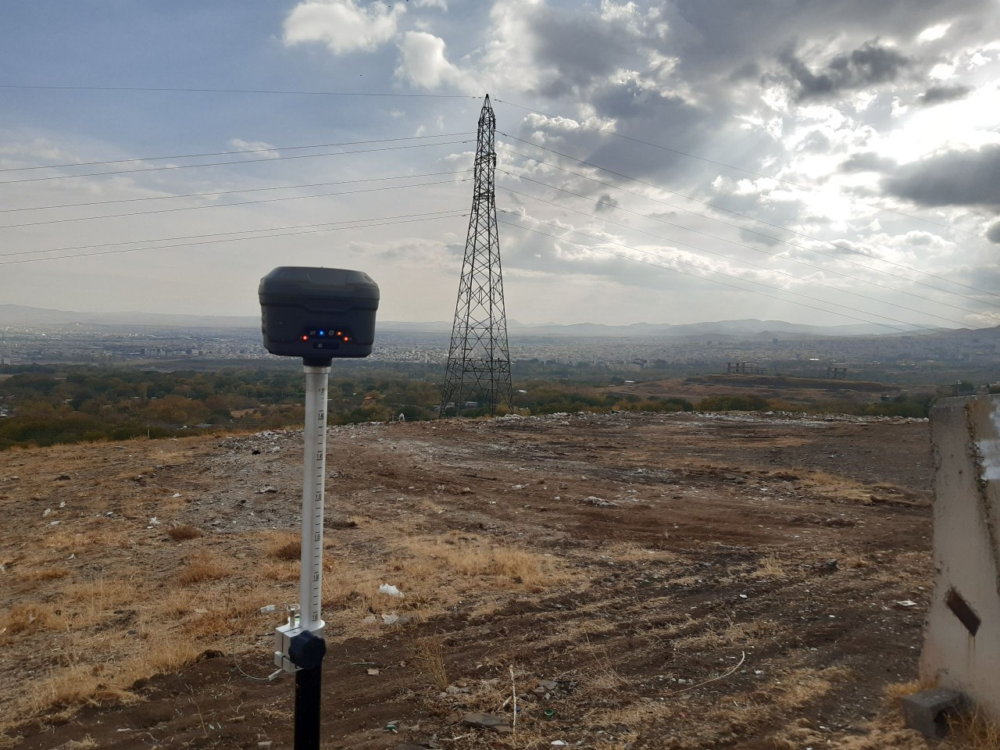

دقت در نقشهبرداری، اطمینان در تصمیمگیری
ارائه خدمات تخصصی نقشهبرداری، تهیه نقشههای توپوگرافی، ثبتی و UTM با دقت و کیفیت حرفهای
خدمات تخصصی
چرا مهندس رضا نامنی؟
دقت، مسئولیتپذیری و توجه به نیاز هر پروژه
دقت در نقشهبرداری
توجه به جزئیات و انجام اندازهگیریها با دقت، برای تهیه اطلاعات مکانی قابل اتکا.
خدمات متنوع
ارائه خدمات نقشهبرداری در زمینه اراضی کشاورزی، منابع طبیعی، توپوگرافی، کاداستر و UTM.
توجه به نیاز مشتری
بررسی درخواست و انتخاب روش مناسب با توجه به نوع و شرایط هر پروژه.
تهیه و ارائه نقشه
آمادهسازی اطلاعات و نقشههای موردنیاز متناسب با موضوع و درخواست پروژه.
مراحل انجام پروژه
از ثبت درخواست تا آمادهسازی و تحویل نقشه
ثبت درخواست و مشاوره
ابتدا نوع درخواست و نیاز پروژه از طریق تماس با ما بررسی میشود.
بررسی اولیه پروژه
اطلاعات و محدوده موردنظر بررسی شده و اقدامات لازم برای اجرای پروژه مشخص میشود.
عملیات نقشهبرداری
برداشت اطلاعات و اندازهگیریهای موردنیاز در محل پروژه انجام میشود.
تهیه و تحویل نقشه
اطلاعات برداشتشده پردازش و نقشه متناسب با درخواست پروژه آماده و ارائه میشود.
همراه شما در سراسر استان همدان
خدمات نقشهبرداری اراضی کشاورزی، منابع طبیعی، توپوگرافی، کاداستر، نقشههای ثبتی و UTM در سطح استان همدان ارائه میشود.
گالری تصاویر
نمونهای از تجهیزات و فعالیتهای نقشهبرداری




درباره ما
مهندس رضا نامنی با ارائه خدمات تخصصی نقشهبرداری، در زمینه تهیه نقشههای اراضی کشاورزی، منابع طبیعی، توپوگرافی، کاداستر، ثبتی و UTM فعالیت میکند. هدف، ارائه خدمات دقیق و قابل اعتماد با استفاده از تجهیزات و روشهای تخصصی نقشهبرداری است.
برای پروژه خود به خدمات نقشهبرداری نیاز دارید؟
برای دریافت راهنمایی، بررسی درخواست و هماهنگی انجام پروژه، با ما در ارتباط باشید.
تماس و ارتباط با ما
مهندس رضا نامنی
شماره تماس: 09188109597
 واتساپ
واتساپ
 تلگرام
تلگرام